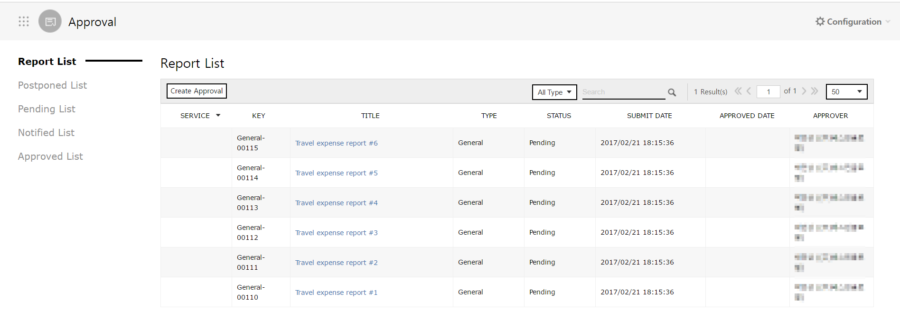

Approval
각Provides features to deal with approvals required in various issues.
You can not only make a draft of a document but also make report to and conduct approval process. Also, you can check approval history and make an announcement related to an approval in the past.
Managing Approval and Approval History
Following is how to manage approval and approval history with Approval Service.
1. Writing General Document
Following is how to write a new document, such as memorandum for expense account or request for day-off, on any issue which requires an approval.
-
Click the [Create Approval] button to write a new document for an approval.
-
On the drop-down menu for 'Type', select ‘General’. (General is the default value).
Type Description General Means an approval document for a general issue. Work Means an acknowledgement for Release plan. -
Enter the details required for an approval.
No Name Required Description ① Type Required Select the type of a document.
You can select either General or Work.② Title Required Enter the title of a document. ③ Approver Required You can set the Approver Group. ④ Description . You can write the text of an document required for an approval. ⑤ Attaching File . You can select attachments.
If you click the [Attaching File] button, the file explorer is shown as the pop-up. Then you can select a file to be attached.⑥ Submission Schedule . You can set a deadline of document submission.
Click the [Configuration] checkbox to set a deadline in year/month/day/hour/minute. -
Click the [Submit] button to submit a document. As the document has been submitted, members of the Approver Group are to receive a notification for a new approval document via e-mail.
1.1 Setting Approver Group
You can set the Approver Group by designating the Approver, Consenter, Post-Approver and person to be notified.
-
Click the [Search] button of ‘Approver’.
-
On ‘Member’ of the “Search Approver” pop-up, select a member who is to be included in the Approver Group and click the [Selected Add] button. The ‘Selected Member List’ shows who are added to the Approver Group.
-
Click the [Save] button.
-
Assign a role for each member added to the group. After selecting the member, select one of the following to assign a role: Approval, Consent, Post-Approval or Notification.
Role Description Approval Means the Approver of an approval document.
The next approval may not proceed without an approval of the Approver.Consent Means the Consenter of an approval document.
The next approval may not proceed without an approval of the Consenter.Post-Approval Means the Post-Approver of an approval document.
The next approval may proceed without an approval of the Post-Approver.
The Post-Approver can approve the document, but cannot reject it.Notification Means the person to be notified of an approval document.
The person has no right to approve or reject a document, but just may refer to it. -
Among members added to the list, set an order in which approvals are to be made. Click the [Up] and [Down] button to change the order.
2. Approval Process
Following is how to check the submitted approval documents and how to approve/reject them.
2.1 My Document
-
Click the “Report List” menu to check the submitted documents. The Report List menu shows documents which you have written and whose approval process is in progress..

-
Click the document on the Report List menu to check its details. Also, you can check its approval status.

2.2 Document whose Approver or Consenter Is You
-
Click the “Pending List” menu to check the submitted documents. The Pending List menu shows documents you are bound to approve or reject.
-
Click the document to check its details.
-
Click the [Reject] or [Approval] button to reject or approve the document.
-
As you click the [Reject] or [Approval] button, the “Approval” or “Reject” pop-up appears respectively. You can write the reason for your approval/rejection. After writing the reason, click the [OK] button to complete it.
-
A document whose Approver Group has finished the process for either approval or rejection is shown on the “Approved List’. Click a document on the Approved List to check its approval history.
2.3 Document for which You Are to Be Notified
If you are the person to be notified of a document, the document is to be indicated on the “Notified List” as it is fully approved.
Click the “Notified List” to check the approved document for which you are one of persons to be notified.
3. Searching Approval History
You can search documents on each menu in accordance with their approval status.
- - Report List: These are documents you have written.
- - Postponed List: These are documents you are currently writing.
- - Pending List: These are documents for which you are the Approver or Consenter. Their approval process is in progress.
- - Notified List: These are documents for which you are the person to be notified. Their approval process is completed.
- - Approved List: These are documents you have approved or consented to.
How to search documents is identical on all menus.
-
Select “Type” of the document you want to search for.
-
Enter a keyword for search.
-
Documents which are identical to the selected Type and keyword will be shown on the list. Texts identical to the keyword will be highlighted.